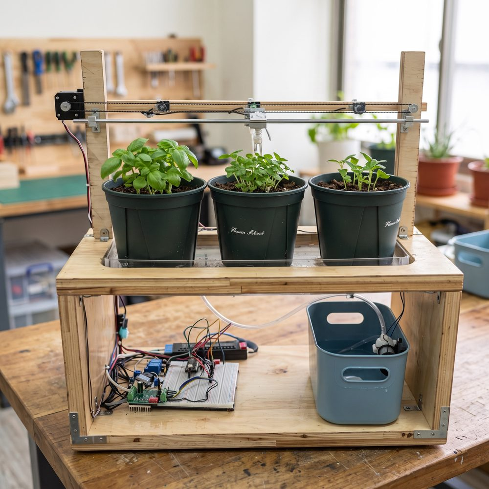

讓綠意蔓延吧
智慧澆水系統：一台機器、一條軌道、三盆植物。哪一盆口渴，滑塊就移動過去澆水，再等水分被吸收後重新確認。

滑塊移動中水泵運轉中等待吸收位置：中間
按下任一盆的「讓它變乾」，看看系統如何處理。濕度 30% 以下就會觸發澆水，回升到 60% 以上才結束。
示範為模擬動畫：實機澆水 10 秒、回中間等待 30 秒，這裡已加速。
智慧澆水系統：一台機器、一條軌道、三盆植物。哪一盆口渴，滑塊就移動過去澆水，再等水分被吸收後重新確認。

按下任一盆的「讓它變乾」，看看系統如何處理。濕度 30% 以下就會觸發澆水，回升到 60% 以上才結束。
示範為模擬動畫：實機澆水 10 秒、回中間等待 30 秒，這裡已加速。